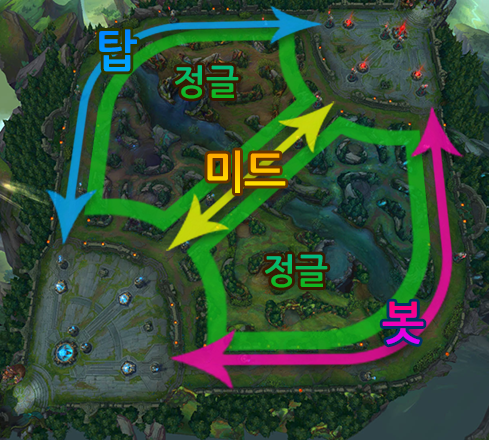

- 캐릭터 소개
- 캐릭터 스킬 소개
- 캐릭터 스킨 소개
소개글
《리그 오브 레전드》(League of Legends, LoL)는 라이엇 게임즈에서 개발, 서비스하는 멀티플레이어 온라인 배틀 아레나
(Multiplayer Online Battle Arena, MOBA)게임이다. 제작자는 도타 올스타즈의 제작자 중 한 명인 스티브 피크(구인수)이며
워크래프트의 유즈맵 DotA(Defense of the Ancients)를 바탕으로 제작되었다. 2008년 10월 7일 《리그 오브 레전드:운명의 충돌》
이란 이름으로 처음 발표되었으며 2009년 4월 10일에 클로즈 베타를 실시하였으며 2009년 10월 22일에 오픈 베타를 걸쳐
북아메리카에서는 2009년 10월 27일부터 정식 서비스를 시작하였고 대한민국에서는 2011년 12월 4일부터 서비스를 시작하였다.
AOS는 최초의 MOBA 장르게임인 스타크래프트의 유즈맵 Aeon Of Strife에서 따 왔다.
리그 오브 레전드란?
리그 오브 레전드는 5명의 강력한 챔피언으로 구성된 양 팀이 서로의
기지를 파괴하기 위해 치열한 사투를벌이는 전략 게임입니다. 140여명의
챔피언 중 하나를 선택해 화려한 플레이를 펼치며 적을 처치하고 포탑을
파괴해 승리를 쟁취하세요.

기지 파괴하기
넥서스는 양 팀 기지의 심장부입니다. 적의 넥서스를 먼저 파괴하는 팀이 게임에서 승리합니다.
아군 넥서스
넥서스에서 미니언이 생성됩니다.
넥서스 뒤에 있는 소환사의 제단에서
체력과 마나를 빠르게 회복하고상점을 이용할 수 있습니다.
